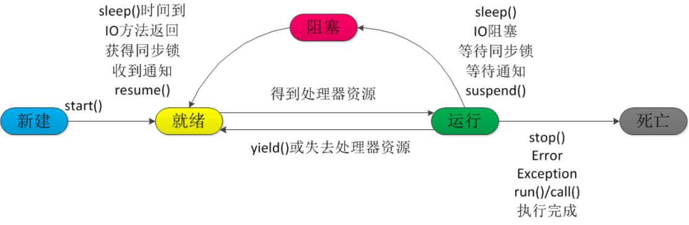
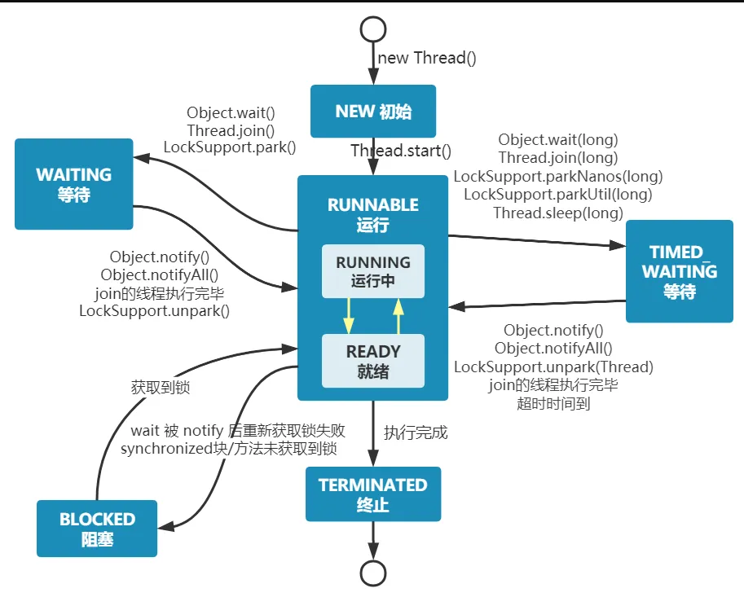
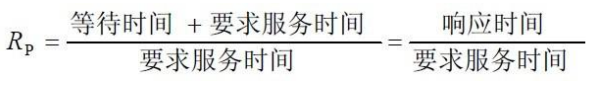

线程
线程和进程
进程
进程是程序的⼀次执⾏过程，是系统运⾏程序的基本单位，因此进程是动态的。系统运⾏⼀个程序即 是⼀个进程从创建，运⾏到消亡的过程。
在Java中，当我们启动main函数时其实就是启动了⼀个JVM的进程，而main函数所在的线程就
是这个进程中的⼀个线程，也称主线程。
线程
线程与进程相似，但线程是⼀个比进程更小的执⾏单位。⼀个进程在其执⾏的过程中可以产生多个线程。 与进程不同的是同类的多个线程共享进程的堆和方法区资源，但每个线程有⾃⼰的程序计数器、虚拟机栈和本地方法栈， 所以系统在产生⼀个线程，或是在各个线程之间作切换⼯作时，负担要比进程小得多，也正因为如此，线程也被称为轻量级进程。
Java程序天生就是多线程程序，我们可以通过JMX来看看⼀个普通的Java程序有哪些线程
// 获取 Java 线程管理 MXBean
ThreadMXBean threadMXBean = ManagementFactory.getThreadMXBean();
// 不需要获取同步的 monitor 和 synchronizer 信息，仅获取线程和线程堆栈信息
ThreadInfo[] threadInfos = threadMXBean.dumpAllThreads(false, false);
// 遍历线程信息，仅打印线程 ID 和线程名称信息
for (ThreadInfo threadInfo : threadInfos) {
System.out.println("[" + threadInfo.getThreadId() + "] " +
threadInfo.getThreadName());
}
程序输出
[5] Attach Listener //添加事件
[4] Signal Dispatcher // 分发处理给 JVM 信号的线程
[3] Finalizer //调用对象 finalize 方法的线程
[2] Reference Handler //清除 reference 线程
[1] main //main 线程,程序入⼝
从上⾯的输出内容可以看出：⼀个 Java 程序的运⾏是 main 线程和多个其他线程同时运⾏。
线程的生命周期
当线程被创建并启动以后，它既不是一启动就进入了执行状态，也不是一直处于执行状态。
在线程的生命周期中，它要经过新建(New)、就绪(Runnable)、运行(Running)、阻塞(Blocked)和死亡(Dead)5 种状态。
尤其是当线程启动以后，它不可能一直"霸占"着CPU独自运行，所以CPU需要在多条线程之间切换，于是线程状态也会多次在运行、阻塞之间切换。
线程的生命周期：NEW、RUNNABLE、RUNNING、BLOCKED、DEAD
建(
New)：当程序使用new关键字创建了一个线程对象之后，该线程就处于新建状态，此时仅由JVM为其分配内存，并初始化其成员变量的值。就绪(
Runnable)：当线程对象调用了start()方法之后，该线程处于就绪状态。Java虚拟机会为其创建方法调用栈和程序计数器，等待调度运行。运行(
Running)：如果处于就绪状态的线程获得了CPU，开始执行run()方法的线程执行体，则该线程处于运行状态。阻塞(
Blocked)：阻塞状态是指线程因为某种原因放弃了cpu使用权，也即让出了cpu timeslice，暂时停止运行。直到线程进入可运行(runnable)状态，才有机会再次获得cpu timeslice转到运行(running)状态。- 阻塞的情况分三种：
- 等待阻塞 (
o.wait -> 等待对列)：运行(running)的线程执行o.wait()方法，JVM会把该线程放入等待队列(waitting queue) 中。 - 同步阻塞 (
lock -> 锁池)：运行(running)的线程在获取对象的同步锁时，若该同步锁被别的线程占用，则JVM会把该线程放入锁池 (lock pool) 中。 - 其他阻塞 (
sleep/join)：运行(running)的线程执行Thread.sleep(long ms)或t.join()方法，或者发出了I/O请求时，JVM会把该线程置为阻塞状态。当sleep()状态超时、join()等待线程终止或者超时、或者I/O处理完毕时，线程重新转入可运行(runnable)状态。
- 等待阻塞 (
- 阻塞的情况分三种：
线程死亡(
Dead)：线程会以下面三种方式结束，结束后就是死亡状态。
正常结束：run()或call()方法执行完成，线程正常结束。
异常结束：线程抛出一个未捕获的Exception或Error。
调用stop：直接调用该线程的stop()方法来结束该线程—该方法通常容易导致死锁，不推荐使用。

线程的状态
Java线程在运⾏的生命周期中的指定时刻只可能处于下⾯ 6 种不同状态的其中⼀个状态：
NEW：初始状态，线程被创建出来但没有被调用start()。RUNNABLE：运⾏状态，线程被调用了start()等待运⾏的状态。BLOCKED：阻塞状态，需要等待锁释放。WAITING：等待状态，表示该线程需要等待其他线程做出⼀些特定动作（通知或中断）。TIME_WAITING：超时等待状态，可以在指定的时间后⾃⾏返回而不是像WAITING那样⼀直等待。TERMINATED：终⽌状态，表示该线程已经运⾏完毕。线程在生命周期中并不是固定处于某⼀个状态而是随着代码的执⾏在不同状态之间切换。
线程实现
继承Thread类
Thread类本质上是实现了Runnable接口的一个实例，代表一个线程的实例。启动线程的唯一方
法就是通过Thread类的start()实例方法。start()方法是一个native方法，它将启动一个新线程，并执行run()方法。
public class MyThread extends Thread {
public void run() {
System.out.println("MyThread.run()");
}
}
MyThread myThread1 = new MyThread();
myThread1.start();
实现Runnable接口。
如果自己的类已经extends另一个类，就无法直接extends Thread，此时，可以实现一个Runnable接口。
public class MyThread extends OtherClass implements Runnable {
public void run() {
System.out.println("MyThread.run()");
}
}
//启动 MyThread，需要首先实例化一个 Thread，并传入自己的 MyThread 实例：
MyThread myThread = new MyThread();
Thread thread = new Thread(myThread);
thread.start();
//事实上，当传入一个 Runnable target 参数给 Thread 后，Thread 的 run()方法就会调用
target.run()
public void run() {
if (target != null) {
target.run();
}
}
ExecutorService、Callable<Class>、Future有返回值线程
有返回值的任务必须实现Callable接口，类似的，无返回值的任务必须Runnable接口。
执行Callable任务后，可以获取一个Future的对象，在该对象上调用get就可以获取到Callable任务返回的Object了，
再结合线程池接口ExecutorService就可以实现传说中有返回结果的多线程了。
//创建一个线程池
ExecutorService pool = Executors.newFixedThreadPool(taskSize);
// 创建多个有返回值的任务
List<Future> list = new ArrayList<Future>();
for (int i = 0; i < taskSize; i++) {
Callable c = new MyCallable(i + " ");
// 执行任务并获取 Future 对象
Future f = pool.submit(c);
list.add(f);
}
// 关闭线程池
pool.shutdown();
// 获取所有并发任务的运行结果
for (Future f : list) {
// 从 Future 对象上获取任务的返回值，并输出到控制台
System.out.println("res：" + f.get().toString());
}
基于线程池的方式
线程和数据库连接这些资源都是非常宝贵的资源。那么每次需要的时候创建，不需要的时候销毁，是非常浪费资源的。 那么我们就可以使用缓存的策略，也就是使用线程池。
// 创建线程池
ExecutorService threadPool = Executors.newFixedThreadPool(10);
while(true) {
threadPool.execute(new Runnable() { // 提交多个线程任务，并执行
@Override
public void run() {
System.out.println(Thread.currentThread().getName() + " is running ..");
try {
Thread.sleep(3000);
} catch (InterruptedException e) {
e.printStackTrace();
}
}
});
}
线程池
线程池就是管理一系列线程的资源池，其提供了一种限制和管理线程资源的方式。 每个线程池还维护一些基本统计信息，例如已完成任务的数量。
线程池的好处：
- 降低资源消耗：通过重复利用已创建的线程降低线程创建和销毁造成的消耗。
- 提高响应速度：当任务到达时，任务可以不需要等到线程创建就能立即执行。
- 提高线程的可管理性：线程是稀缺资源，如果无限制的创建，不仅会消耗系统资源，还会降低系统的稳定性，使用线程池可以进行统一的分配，调优和监控。
线程池一般用于执行多个不相关联的耗时任务，没有多线程的情况下，任务顺序执行，使用了线程池的话可让多个不相关联的任务同时执行。
Java里面线程池的顶级接口是Executor，但是严格意义上讲Executor并不是一个线程池，而只是一个执行线程的工具。
真正的线程池接口是ExecutorService。
newCachedThreadPool
创建一个可根据需要创建新线程的线程池，但是在以前构造的线程可用时将重用它们。
对于执行很多短期异步任务的程序而言，这些线程池通常可提高程序性能。
调用execute将重用以前构造的线程(如果线程可用)。如果现有线程没有可用的，则创建一个新线程并添加到池中。
终止并从缓存中移除那些已有60秒钟未被使用的线程。因此，长时间保持空闲的线程池不会使用任何资源。
newFixedThreadPool
创建一个可重用固定线程数的线程池，以共享的无界队列方式来运行这些线程。
在任意点，在大多数nThreads线程会处于处理任务的活动状态。
如果在所有线程处于活动状态时提交附加任务，则在有可用线程之前，附加任务将在队列中等待。
如果在关闭前的执行期间由于失败而导致任何线程终止，那么一个新线程将代替它执行后续的任务(如果需要)。
在某个线程被显式地关闭之前，池中的线程将一直存在。
newScheduledThreadPool
创建一个线程池，它可安排在给定延迟后运行命令或者定期地执行。
ScheduledExecutorService scheduledThreadPool= Executors.newScheduledThreadPool(3);
scheduledThreadPool.schedule(newRunnable(){
@Override
public void run() {
System.out.println("延迟三秒");
}
}, 3, TimeUnit.SECONDS);
scheduledThreadPool.scheduleAtFixedRate(newRunnable(){
@Override
public void run() {
System.out.println("延迟 1 秒后每三秒执行一次");
}
},1,3,TimeUnit.SECONDS);
newSingleThreadExecutor
Executors.newSingleThreadExecutor()返回一个线程池(这个线程池只有一个线程)，
这个线程池可以在线程死后(或发生异常时)重新启动一个线程来替代原来的线程继续执行下去！
start和run的区别
start()方法来启动线程，真正实现了多线程运行。
这时无需等待run方法体代码执行完毕，可以直接继续执行后续的代码。
通过调用Thread类的start()方法来启动一个线程，这时此线程是处于就绪状态，并没有运行。
方法run()称为线程体，它包含了要执行的这个线程的内容，线程就进入了运行状态，开始运行run函数当中的代码。Run方法运行结束，此线程终止。然后CPU再调度其它线程。
sleep和wait的区别
对于sleep()方法，我们首先要知道该方法是属于Thread类中的。而wait()方法，则是属于Object类中的。
sleep()方法导致了程序暂停执行指定的时间，让出cpu该其他线程，但是他的监控状态依然保持者，当指定的时间到了又会自动恢复运行状态。
在调用sleep()方法的过程中，线程不会释放对象锁。
而当调用wait()方法的时候，线程会放弃对象锁，进入等待此对象的等待锁定池，只有针对此对象调用notify()方法后本线程才进入对象锁定池准备获取对象锁进入运行状态。
后台线程
- 定义：守护线程--也称“服务线程”，他是后台线程，它有一个特性，即为用户线程提供公共服务，在没有用户线程可服务时会自动离开。
- 优先级：守护线程的优先级比较低，用于为系统中的其它对象和线程提供服务。
- 设置：通过
setDaemon(true)来设置线程为“守护线程”；将一个用户线程设置为守护线程的方式是在 线程对象创建 之前 用线程对象的setDaemon方法。 - 在
Daemon线程中产生的新线程也是Daemon的。 - 线程则是
JVM级别的，以Tomcat为例，如果你在Web应用中启动一个线程，这个线程的生命周期并不会和Web应用程序保持同步。 也就是说，即使你停止了Web应用，这个线程依旧是活跃的。 example: 垃圾回收线程就是一个经典的守护线程，当我们的程序中不再有任何运行的Thread，程序就不会再产生垃圾，垃圾回收器也就无事可做， 所以当垃圾回收线程是JVM上仅剩的线程时，垃圾回收线程会自动离开。 它始终在低级别的状态中运行，用于实时监控和管理系统中的可回收资源。- 生命周期：守护进程(
Daemon)是运行在后台的一种特殊进程。 它独立于控制终端并且周期性地执行某种任务或等待处理某些发生的事件。 也就是说守护线程不依赖于终端，但是依赖于系统，与系统“同生共死”。 当JVM中所有的线程都是守护线程的时候，JVM就可以退出了；如果还有一个或以上的非守护线程则JVM不会退出。
线程共享数据
Java里面进行多线程通信的主要方式就是共享内存的方式，共享内存主要的关注点有两个：可见性和有序性原子性。
Java内存模型(JMM)解决了可见性和有序性的问题，而锁解决了原子性的问题，理想情况下我们希望做到“同步”和“互斥”。
有以下常规实现方法：
将数据抽象成一个类，并将数据的操作作为这个类的方法
public class MyData {
private int j=0;
public synchronized void add(){
j++;
System.out.println("线程"+Thread.currentThread().getName()+"j 为："+j);
}
public synchronized void dec(){
j--;
System.out.println("线程"+Thread.currentThread().getName()+"j 为："+j);
}
public int getData(){
return j;
}
}
public class AddRunnable implements Runnable{
MyData data;
public AddRunnable(MyData data){
this.data= data;
}
public void run() {
data.add();
}
}
public class DecRunnable implements Runnable {
MyData data;
public DecRunnable(MyData data){
this.data = data;
}
public void run() {
data.dec();
}
}
public static void main (String[] args) {
MyData data = new MyData();
Runnable add = new AddRunnable(data);
Runnable dec = new DecRunnable(data);
for (int i = 0; i < 2; i++) {
new Thread(add).start();
new Thread(dec).start();
}
}
Runnable对象作为一个类的内部类
将Runnable对象作为一个类的内部类，共享数据作为这个类的成员变量，每个线程对共享数据的操作方法也封装在外部类，以便实现对数据的各个操作的同步和互斥，
作为内部类的各个Runnable对象调用外部类的这些方法。
public class MyData {
private int j=0;
public synchronized void add() {
j++;
System.out.println("线程"+Thread.currentThread().getName()+"j 为："+j);
}
public synchronized void dec() {
j--;
System.out.println("线程"+Thread.currentThread().getName()+"j 为："+j);
}
public int getData(){
return j;
}
}
public class TestThread {
public static void main (String[] args) {
final MyData data = new MyData();
for(int i=0;i<2;i++){
new Thread(new Runnable(){
public void run() {
data.add();
}
}).start();
new Thread(new Runnable(){
public void run() {
data.dec();
}
}).start();
}
}
}
线程调度和调度算法
Java中用到的线程调度
抢占式调度：
- 抢占式调度指的是每条线程执行的时间、线程的切换都由系统控制，系统控制指的是在系统某种运行机制下， 可能每条线程都分同样的执行时间片，也可能是某些线程执行的时间片较长，甚至某些线程得不到执行的时间片。 在这种机制下，一个线程的堵塞不会导致整个进程堵塞。
协同式调度：
- 协同式调度指某一线程执行完后主动通知系统切换到另一线程上执行，这种模式就像接力赛一样， 一个人跑完自己的路程就把接力棒交接给下一个人，下个人继续往下跑。 线程的执行时间由线程本身控制，线程切换可以预知，不存在多线程同步问题， 但它有一个致命弱点：如果一个线程编 写有问题，运行到一半就一直堵塞，那么可能导致整个系统崩溃。
JVM的线程调度实现（抢占式调度）
Java使用的线程调使用抢占式调度，Java中线程会按优先级分配CPU时间片运行，且优先级越高
越优先执行，但优先级高并不代表能独自占用执行时间片，可能是优先级高得到越多的执行时间
片，反之，优先级低的分到的执行时间少但不会分配不到执行时间。
线程让出cpu的情况：
- 当前运行线程主动放弃
CPU，JVM暂时放弃CPU操作(基于时间片轮转调度的JVM操作系统不会让线程永久放弃CPU，或者说放弃本次时间片的执行权)，例如调用yield()方法。 - 当前运行线程因为某些原因进入阻塞状态，例如阻塞在
I/O上。 - 当前运行线程结束，即运行完
run()方法里面的任务。
进程调度算法
优先调度算法
先来先服务调度算法（FCFS）
当在作业调度中采用该算法时，每次调度都是从后备作业队列中选择一个或多个最先进入该队列的作业， 将它们调入内存，为它们分配资源、创建进程，然后放入就绪队列。 在进程调度中采用 FCFS 算法时，则每次调度是从就绪队列中选择一个最先进入该队列的进程，为之分配处理机，使之投入运行。 该进程一直运行到完成或发生某事件而阻塞后才放弃处理机， 特点是：算法比较简单，可以实现基本上的公平。
短作业(进程)优先调度算法
短作业优先(SJF)的调度算法是从后备队列中选择一个或若干个估计运行时间最短的作业，将它们调入内存运行。 而短进程优先(SPF)调度算法则是从就绪队列中选出一个估计运行时间最短的进程， 将处理机分配给它，使它立即执行并一直执行到完成，或发生某事件而被阻塞放弃处理机时再重新调度。 该算法未照顾紧迫型作业。
高优先权优先调度算法 为了照顾紧迫型作业，使之在进入系统后便获得优先处理，引入了最高优先权优先(FPF)调度算法。 当把该算法用于作业调度时，系统将从后备队列中选择若干个优先权最高的作业装入内存。 当用于进程调度时，该算法是把处理机分配给就绪队列中优先权最高的进程。
非抢占式优先权算法
在这种方式下，系统一旦把处理机分配给就绪队列中优先权最高的进程后，该进程便一直执行下去，直至完成； 或因发生某事件使该进程放弃处理机时。 这种调度算法主要用于批处理系统中；也可用于某些对实时性要求不严的实时系统中。
抢占式优先权调度算法
在这种方式下，系统同样是把处理机分配给优先权最高的进程，使之执行。 但在其执行期间，只要又出现了另一个其优先权更高的进程，进程调度程序就立即停止当前进程(原优先权最高的进程)的执行，重新将处理机分配给新到的优先权最高的进程。 显然，这种抢占式的优先权调度算法能更好地满足紧迫作业的要求，故而常用于要求比较严格的实时系统中，以及对性能要求较高的批处理和分时系统中。
高响应比优先调度算法
在批处理系统中，短作业优先算法是一种比较好的算法，其主要的不足之处是长作业的运行得不到保证。 如果我们能为每个作业引入前面所述的动态优先权，并使作业的优先级随着等待时间的增加而以速率 a 提高， 则长作业在等待一定的时间后，必然有机会分配到处理机。 该优先权的变化规律可描述为： 
- 如果作业的等待时间相同，则要求服务的时间愈短，其优先权愈高，因而该算法有利于短作业。
- 当要求服务的时间相同时，作业的优先权决定于其等待时间，等待时间愈长，其优先权愈高，因而它实现的是先来先服务。
- 对于长作业，作业的优先级可以随等待时间的增加而提高，当其等待时间足够长时，其优先级便可升到很高，从而也可获得处理机。 简言之，该算法既照顾了短作业，又考虑了作业到达的先后次序，不会使长作业长期得不到服务。 因此，该算法实现了一种较好的折衷。当然，在利用该算法时，每要进行调度之前，都须先做响应比的计算，这会增加系统开销。
基于时间片的轮转调度算法
时间片轮转法
在早期的时间片轮转法中，系统将所有的就绪进程按先来先服务的原则排成一个队列，每次调度时，把 CPU 分配给队首进程，并令其执行一个时间片。 时间片的大小从几 ms 到几百 ms。当执行 的时间片用完时，由一个计时器发出时钟中断请求，调度程序便据此信号来停止该进程的执行，并将它送往就绪队列的末尾； 然后，再把处理机分配给就绪队列中新的队首进程，同时也让它执行一个时间片。这样就可以保证就绪队列中的所有进程在一给定的时间内均能获得一时间片的处理机执行时间。
多级反馈队列调度算法
- 应设置多个就绪队列，并为各个队列赋予不同的优先级。第一个队列的优先级最高，第二个队列次之，其余各队列的优先权逐个降低。 该算法赋予各个队列中进程执行时间片的大小也各不相同，在优先权愈高的队列中，为每个进程所规定的执行时间片就愈小。 例如，第二个队列的时间片要比第一个队列的时间片长一倍，……，第 i+1 个队列的时间片要比第 i 个队列的时间片长一倍。
- 当一个新进程进入内存后，首先将它放入第一队列的末尾，按 FCFS 原则排队等待调度。 当轮到该进程执行时，如它能在该时间片内完成，便可准备撤离系统； 如果它在一个时间片结束时尚未完成，调度程序便将该进程转入第二队列的末尾，再同样地按 FCFS 原则等待调度执行； 如果它在第二队列中运行一个时间片后仍未完成，再依次将它放入第三队列，……， 如此下去，当一个长作业(进程)从第一队列依次降到第 n 队列后，在第 n 队列便采取按时间片轮转的方式运行。
- 仅当第一队列空闲时，调度程序才调度第二队列中的进程运行；仅当第 1～(i-1)队列均空时，才会调度第 i 队列中的进程运行。 如果处理机正在第 i 队列中为某进程服务时，又有新进程进入优先权较高的队列(第 1～(i-1)中的任何一个队列)， 则此时新进程将抢占正在运行进程的处理机，即由调度程序把正在运行的进程放回到第 i 队列的末尾，把处理机分配给新到的高优先权进程。 在多级反馈队列调度算法中，如果规定第一个队列的时间片略大于多数人机交互所需之处理时间时，便能够较好的满足各种类型用户的需要。
ThreadLocal
ThreadLocal，叫做线程本地变量，也叫做线程本地存储，ThreadLocal的作用是提供线程内的局部变量，
这种变量在线程的生命周期内起作用，减少同一个线程内多个函数或者组件之间一些公共变量的传递的复杂度。
ThreadLocal类主要解决的就是让每个线程绑定⾃⼰的值，可以将ThreadLocal类形象的比喻成存放数据的盒⼦，盒⼦中可以存储每个线程的私有数据。
ThreadLocalMap（线程的一个属性）
每个线程中都有一个自己的ThreadLocalMap类对象，可以将线程自己的对象保持到其中，各管各的，线程可以正确的访问到自己的对象。
将一个共用的ThreadLocal静态实例作为key，将不同对象的引用保存到不同线程的ThreadLocalMap中，
然后在线程执行的各处通过这个静态ThreadLocal实例的get()方法取得自己线程保存的那个对象，避免了将这个对象作为参数传递的麻烦。
ThreadLocalMap其实就是线程里面的一个属性，它在Thread类中定义
ThreadLocal.ThreadLocalMap threadLocals = null;
使用场景
最常见的ThreadLocal使用场景：数据库连接、Session 管理等。
private static final ThreadLocal threadLocal = new ThreadLocal();
public static Session getSession() throws InfrastructureException {
Session s = (Session) threadLocal.get();
try {
if (s == null) {
s = getSessionFactory().openSession();
threadLocal.set(s);
}
} catch (HibernateException ex) {
throw new InfrastructureException(ex);
}
return s;
}